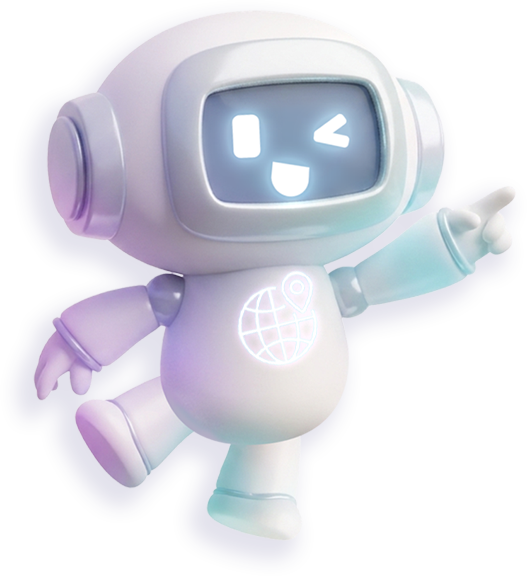

ChatGPT
Chat
Work
이미지나 스티커 만들어줘
글쓰기
ChatGPT에게 물어보세요
Chat
Work
ChatGPT에게 답장하기
나는 남자이고
나는 여자이고
나와 맞는 선택지를 클릭해요.
그림 그리기
동물 돌보기
음식이나 음료 만들기
노래하거나 춤추기
나와 맞는 선택지를 클릭해요.
정리정돈하기
다른 사람 돕기
블록 조립하기
물건 담고 포장하기
나와 맞는 선택지를 클릭해요.
매장 관리·안내원
도서관 사서 보조
일러스트 작가
돌봄 보조교사
공예품 디자이너
포장·물류 직원
반려동물 관리사
급식실 도우미
카페 바리스타
공연 예술가
나와 맞는 선택지를 클릭해요.
이미지 생성 중